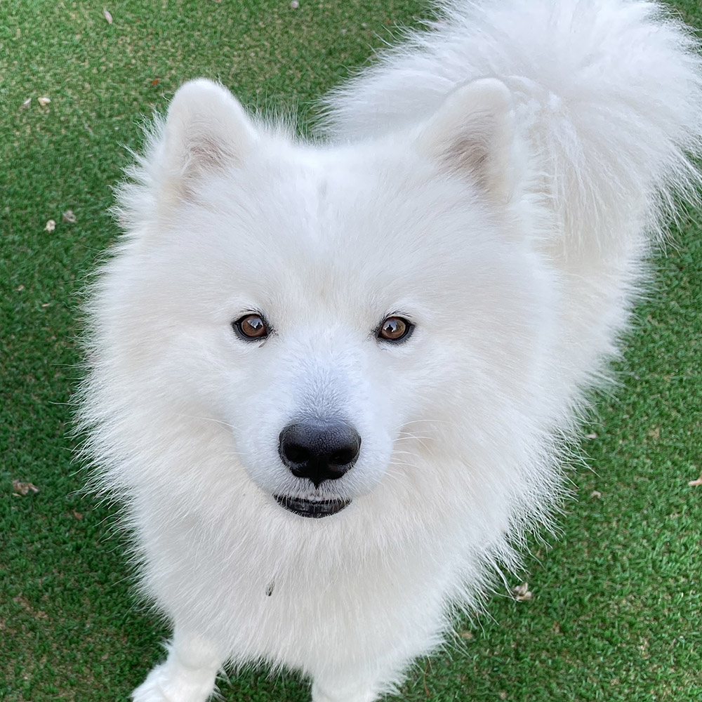

Recommended Friends
You have no recommended furriends.
Open Chat
Go to Openchat Home
#Doggos
#dogs #seoul #walks

324 members
Active
214
Seoul cats society
#cats #chats #snacks
 542 members
Active
542 members
Active
3724